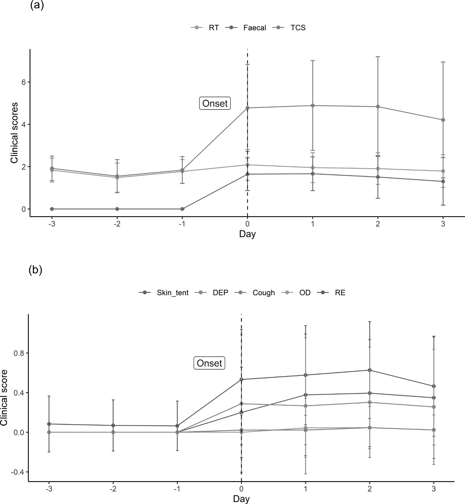
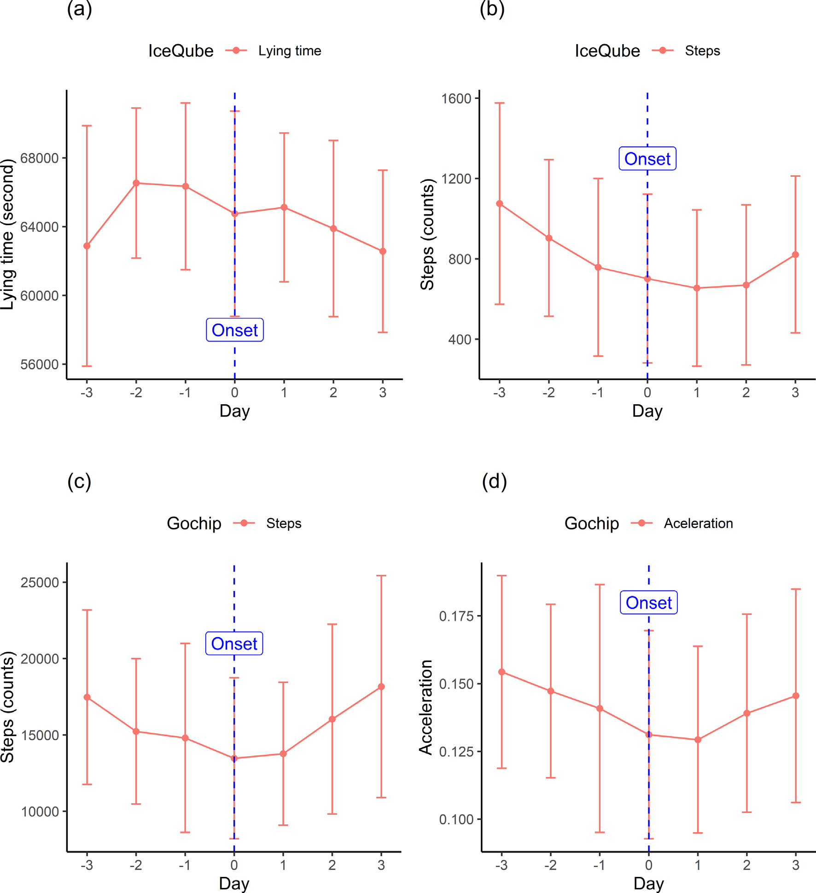
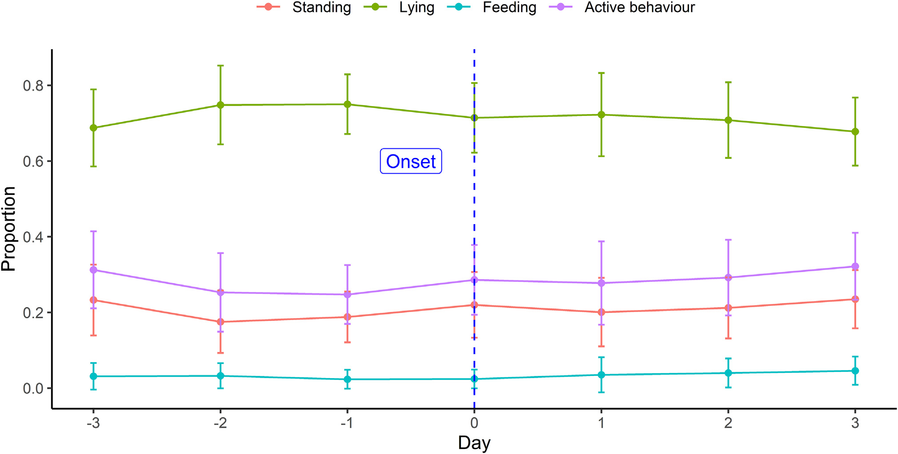
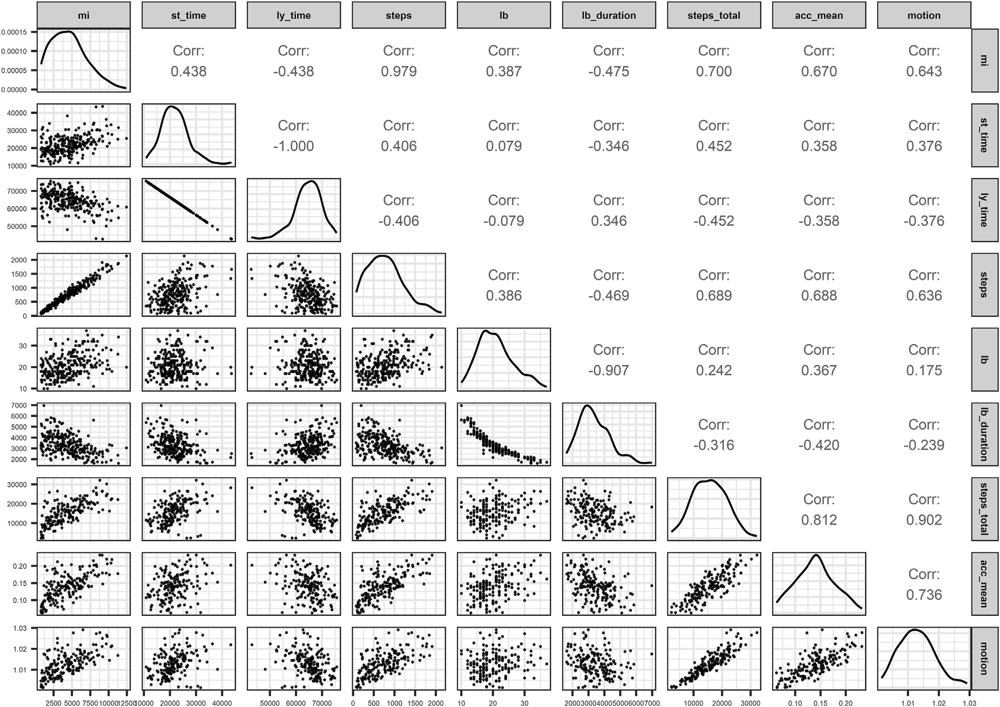

가속도 센서로 송아지 설사의 조짐을 미리 알아챌 수 있을까
연구 해설 · animal - open space 5 (2026) 100158
설사가 눈에 보이기 전에 송아지의 움직임이 먼저 달라진다면, 다리와 목에 단 가속도 센서로 병을 더 일찍 알아챌 수 있지 않을까? 영국 에든버러 대학교 실험 농장의 젖소 송아지 69마리를 16일간 관찰하고, 설사가 나타난 45마리의 발병 전후 7일을 비교하였다.
(16일간)
분석한 송아지
(발병 3일 전~3일 후)
(뒷다리·목)
횟수
1왜 이 연구인가
신생 송아지 설사(neonatal calf diarrhoea, NCD)는 젖소 송아지에게 가장 흔한 질병 가운데 하나로, 폐사와 발병이 많아 농장 경영에도 큰 부담이 된다. 빨리 발견해 치료하면 송아지의 고통을 덜고 병이 퍼지는 것도 막을 수 있다.
그런데 빨리 발견하기는 점점 어려워지고 있다. 자동 착유기와 자동 포유기가 늘고 사육 규모가 커지면서 사람이 개체를 살펴볼 기회가 줄었기 때문이다. 사람의 평가에는 평가자마다 판단이 달라질 수 있다는 한계도 있고, 여러 마리를 함께 키우는 군사(群飼) 환경에서는 시간도 많이 든다.
이 연구는 몸에 다는 가속도 센서를 그 대안으로 시험하였다. 센서로 잰 활동량이 임상 증상보다 먼저 달라지는가가 핵심 질문이다.
2어떻게 관찰했나
2024년 9월부터 12월까지 에든버러 대학교의 Langhill 실험 농장에서 진행하였다. 설사는 대개 생후 3주 안에 나타나므로 생후 3~23일의 송아지를 골랐다. 개별 칸에서 자란 송아지를 생후 4~7일에 세 개의 군사 칸으로 옮겨 칸마다 22~25마리씩 키웠다. 하나의 송아지를 세 가지 방식으로 동시에 기록한 점이 이 연구의 특징이다.
훈련된 평가자 1명이 매일 아침 직장온도, 피부 탄력, 분변 상태, 침울함 등을 0~3점으로 매겼다. 체중은 1, 9, 17일째에 쟀다.
뒷다리의 IceQube는 누워 있는 시간, 걸음 수, 움직임 지수를, 목걸이의 GoChip은 걸음 수, 가속도, 움직임 지수를 기록하였다.
낮 동안 2시간 간격으로 하루 세 번, 2시간 구간에서 10분마다 행동을 기록하였다. 서기, 눕기, 먹기, 사회적 행동 등을 구분하였다.
기준일: 설사 0일(Dd 0)
송아지마다 아픈 시점이 다르므로 달력 날짜로는 비교할 수 없다. 그래서 분변 점수가 처음 1점 이상이 된 날을 Dd 0으로 잡고, 그 앞뒤 3일(Dd −3 ~ Dd 3)을 맞추어 비교하였다. 발병이 일찍 시작된 송아지는 발병 전 자료가 없을 수 있어, Dd −3에는 24마리, Dd 0에는 45마리처럼 날마다 관측 수가 다르다.
임상 점수 기준 (Wisconsin 점수와 Lowe et al., 2021)
| 점수 | 피부 탄력(복원 시간) | 직장온도 | 분변 상태 | 침울함 |
|---|---|---|---|---|
| 0 (정상) | 0초 | 37.8–38.3℃ | 정상 | 기민하고 활발함 |
| 1 (경증) | 1–3초 | 38.4–38.8℃ | 반고형, 페이스트 상태 | 반응이 다소 둔함, 귀가 처짐 |
| 2 (중등도) | 4–5초 | 38.9–39.4℃ | 묽지만 깔짚 위에 머무름 | 무기력함, 머리와 귀가 처짐, 비틀거림 |
| 3 (중증) | 6초 이상 | 39.5℃ 이상 | 물 같아 깔짚 사이로 스며듦 | 심한 침울함, 일어서기를 꺼림 |
주: 논문 표 1 가운데 일부. 눈·코 분비물과 엉덩이 오염 점수도 함께 평가하였다.
3어떻게 분석했나
같은 송아지를 날마다 반복해서 재고, 송아지들은 칸에 묶여 있다. 이런 자료의 관측치는 서로 독립이 아니므로 선형혼합모형을 썼다. 날짜(Dd)의 효과를 고정효과로 추정하고, 칸과 송아지, 칸 안의 날짜를 임의효과로 두었다.
y: 반응변수, μd: 날짜의 고정효과, φp: 칸, γc: 송아지, ωpd: 칸 안의 날짜, εpcd: 잔차. 임의효과와 잔차는 평균 0인 정규분포를 따른다고 가정한다.
원래 활발한 송아지와 원래 조용한 송아지의 차이를 모형이 따로 떼어 내므로, “이 송아지가 평소보다 덜 움직였는가”에 가까운 비교가 된다. 센서 자료는 치우침이 커서 로그로 변환한 뒤 분석하였다. 유의수준은 P < 0.05이고, 분석에는 R의 lme4, lmerTest, emmeans 패키지를 사용하였다.
4무엇이 달라졌나
아래 표의 값은 “7일 사이에 평균이 달라졌는가”를 묻는 검정 결과이다. 임상 증상, 센서, 영상의 세 자료 모두에서 일부 지표가 유의하게 달라졌다.
| 자료 | 변수 | F | P |
|---|---|---|---|
| 임상 | 분변 점수 | 24.599 | <0.001 |
| 임상 | 임상 총점 | 10.126 | <0.001 |
| 임상 | 직장온도 점수 | 3.086 | 0.006 |
| 임상 | 침울함 점수 | 0.972 | 0.481 |
| IceQube | 서 있는 시간 | 4.166 | <0.001 |
| IceQube | 누워 있는 시간 | 3.579 | 0.002 |
| IceQube | 걸음 수 | 3.668 | 0.063 |
| GoChip | 걸음 수 | 3.602 | 0.002 |
| GoChip | 누적 가속도 | 2.145 | 0.051 |
| 영상 | 누워 있는 비율 | 3.231 | 0.004 |
| 영상 | 활동 행동 비율 | 3.289 | 0.004 |
| 영상 | 서 있는 비율 | 2.822 | 0.011 |
| 영상 | 먹는 행동 비율 | 2.420 | 0.027 |
| 영상 | 사회적 행동 비율 | 0.326 | 0.922 |
주: 논문 표 5, 6, 8에서 주요 변수를 옮김. 붉은 글씨는 P < 0.05. 체중은 첫날 43.9 kg에서 마지막 날 58.5 kg으로 늘었고(P < 0.001), 우유 섭취량은 날짜에 따라 달라지지 않았다(P = 0.874). 다만 하루 7 L로 제한 급여하였다.
임상 증상: 발병일에 급등
임상 총점은 Dd −1의 약 1.8점에서 Dd 0의 약 4.8점으로 뛰었다. 발병 전의 총점은 대부분 직장온도 점수이고, 직장온도 점수는 Dd −2부터 조금씩 올랐다.

주: 수직 점선이 발병일(Dd 0)이고 오차 막대는 ±SD이다. 원 논문의 그림은 흑백이며, (a)의 선은 발병 후 기준으로 위에서부터 임상 총점, 직장온도, 분변 점수이다. (b)는 피부 탄력, 침울함, 기침, 눈 분비물, 엉덩이 오염 점수이다.
센서: 누운 시간과 걸음 수의 변화
IceQube의 누워 있는 시간은 Dd −3에서 Dd −2 사이에 약 1시간 늘었다가 이후 서서히 줄었다. 걸음 수는 두 센서 모두 Dd −3부터 발병 무렵까지 줄어든 뒤, 발병 후에 다시 늘었다.

주: 수직 점선이 발병일이고 오차 막대는 ±SD이다. 평균의 변화보다 개체 간 편차가 훨씬 큰 점에 유의해야 한다.
영상 관찰: 비슷한 흐름
영상에서도 비슷한 흐름이 보였다. 누워 있는 비율은 Dd −1까지 조금 늘었다가 줄었고, 서 있는 비율은 그 반대로 움직였다. 사회적 행동은 관찰 자체가 드물어 유의한 변화를 찾지 못하였다. 센서로 잰 누운 시간과 영상의 누운 비율의 상관은 r = 0.52로 중간 정도였고, 이는 영상 관찰 시간이 제한적이었던 탓으로 볼 수 있다.

주: 수직 점선이 발병일이고 오차 막대는 ±SD이다.
[그림 4] 센서 변수 사이의 상관
두 센서의 걸음 수 상관은 r = 0.68이다. 다리와 목이라는 부착 위치와 측정 방식이 달라, 같은 “걸음 수”라도 완전히 같은 양을 재는 것은 아니다. 같은 센서 안에서 걸음 수와 움직임 지수의 상관은 더 강하였다(IceQube r = 0.98, GoChip r = 0.90).

임상 총점은 IceQube의 움직임 지수(r = −0.45), 걸음 수(r = −0.48), GoChip의 걸음 수(r = −0.36)와 음의 상관을 보였다. 아플수록 덜 움직인다는 뜻이다.
5어떤 신호가 먼저 나타났나
이 연구의 핵심 메시지이다. 논문은 평균의 변화를 시간 순으로 놓고 보면 센서 신호가 분변 변화보다 앞선다고 해석한다.
- Dd −3부터걸음 수와 누적 가속도 감소센서에서 가장 먼저 보이는 변화
- Dd −3 → −2누운 시간 약 1시간 증가IceQube. 이후에는 서서히 감소
- Dd −2부터직장온도 점수 상승임상 지표 가운데 가장 이른 변화
- Dd 0분변 점수 1점 이상, 임상 총점 급등눈에 보이는 설사의 시작
- Dd 0 이후걸음 수 회복 시작GoChip은 Dd 0 이후, IceQube는 Dd 1 이후
이 순서는 날짜별 평균의 흐름을 읽은 것이다. [표 1]은 7일 전체에 차이가 있는지를 본 검정이고, “Dd −2가 Dd −3과 다르다”처럼 날짜를 짝지어 비교한 결과는 논문의 표에 없다. 또한 Dd 0은 분변 점수로 정의한 날이므로, 분변 점수가 Dd 0에 오르는 것은 정의상 당연한 결과이다.
6변동의 대부분은 개체 차이
분산 성분을 나누어 보면 실용적으로 중요한 사실이 드러난다. 센서 값의 차이는 날짜나 칸의 환경보다 어떤 송아지인가에 크게 좌우되었다.
| 센서 | 변수 | 송아지 | 칸 | 칸 × 날짜 |
|---|---|---|---|---|
| GoChip | 누적 가속도 | 2.09 | 0.00 | 0.00 |
| GoChip | 걸음 수 | 1.87 | 0.34 | 0.00 |
| IceQube | 걸음 수 | 1.03 | 0.18 | 0.02 |
| IceQube | 움직임 지수 | 0.96 | 0.17 | 0.04 |
| IceQube | 누운 시간 | 0.44 | 0.00 | 0.00 |
주: 논문 표 7. 값이 2이면 해당 성분의 분산이 잔차 분산의 두 배라는 뜻이다.
원래 많이 걷는 송아지와 적게 걷는 송아지의 차이가 크면, “하루 몇 걸음 이하면 경보” 같은 단일 기준은 잘 맞지 않는다. 송아지마다 자신의 평소 수준을 먼저 학습하고 거기서 벗어나는 정도를 봐야 한다. 논문이 정상 행동 자료의 축적과 기계학습을 다음 과제로 꼽는 이유이다.
7시사점과 한계
시사점
- 연속 기록 센서는 사람이 임상 평가에서 발견하기 전에 변화를 포착할 가능성이 있다. 일부 송아지에서는 하루 정도 일찍 정보를 줄 수 있다는 것이 논문의 해석이다.
- 간헐적인 관찰보다 연속 기록이 작고 시간에 따라 변하는 행동 변화를 잡는 데 유리해 보인다.
- 실제 농장에서 쓰려면 개체 차이를 반영한 기준과, 농장 직원이 바로 해석할 수 있는 형태의 결과가 필요하다.
논문이 밝힌 한계
- 건강한 대조군과의 비교는 없다. 설사를 보인 45마리 안에서 날짜별 변화만 보았다.
- 병원체 검사는 일부만 하였다. 증상이 심한 6마리만 검사하였고 모두 크립토스포리디움으로 진단되었다. 나머지의 원인은 알 수 없다.
- 자료 손실이 있었다. 저장 용량 한계와 오류 등으로 19마리의 센서 자료 일부가 빠졌다. 특히 GoChip은 18마리에서 손실이 났다.
- 영상 관찰은 낮 시간의 일부에 그쳤고, 포유기에서 실제로 우유를 받은 방문과 그렇지 않은 방문을 구분할 수 없었다.
이 해설에서 덧붙이는 주의점
- 경보 성능은 알 수 없다. 대조군이 없으므로 민감도, 특이도, 오경보 빈도는 추정되지 않았다. 건강한 송아지에게서도 같은 변화가 나타나는지는 후속 연구로 확인해야 한다.
- 평균의 변화에 비해 개체 간 편차가 크다. 집단 평균의 변화가 곧 개별 송아지를 판별할 수 있다는 뜻은 아니다.
- 발병 전 표본이 더 작다. Dd −3은 24마리로 Dd 0의 45마리보다 적어, 날짜별 평균을 낸 송아지 구성이 조금씩 다르다.
- 변수를 많이 검정하였다. 다중검정 보정은 보고되지 않았으므로 경계에 있는 결과는 신중히 읽어야 한다.
용어 풀이
- NCD
- 신생 송아지 설사(neonatal calf diarrhoea).
- Dd(설사일)
- 분변 점수가 처음 1점 이상이 된 날을 0으로 삼아 센 날짜. Dd −2는 발병 이틀 전이다.
- 3축 가속도 센서
- 세 방향의 움직임을 재는 장치. 여기서 누운 시간, 걸음 수 등을 계산한다.
- 선형혼합모형(LMM)
- 고정효과와 임의효과를 함께 넣어, 같은 개체를 반복 측정한 자료의 상관을 반영하는 회귀모형.
- 임의효과
- 개별 송아지나 칸처럼 집단에서 뽑혔다고 보고, 그 변동의 크기(분산)를 추정하는 효과.
- 분산 성분
- 전체 변동을 송아지, 칸, 잔차 등 원인별로 나눈 것.
- 피부 탄력 검사(tent test)
- 피부를 집었다 놓아 돌아오는 시간을 재는 탈수 검사. 오래 걸릴수록 탈수가 심하다.
- p값
- 효과가 없다고 가정할 때 지금만큼 또는 더 극단적인 결과가 나올 확률. 유의하지 않다는 것은 효과가 없다는 증명이 아니라 증거가 부족하다는 뜻이다.
논문: Kang, H., Lee, J., Sandilands, V., Jarvis, S. & Haskell, M.J. (2026). Early identification of behavioural changes using accelerometers in dairy calves with neonatal calf diarrhoea. animal - open space, 5, 100158. doi:10.1016/j.anopes.2026.100158. 원자료: Zenodo.
그림 1~4는 논문에서 그대로 옮겼고(CC BY 4.0), 설명과 표는 이 페이지를 위해 번역·발췌하였다. 이준호의 기여: 통계 분석(formal analysis), 데이터 정리(data curation). 이 페이지는 연구 내용의 해설이며, 소속 기관의 공식 견해가 아니다.